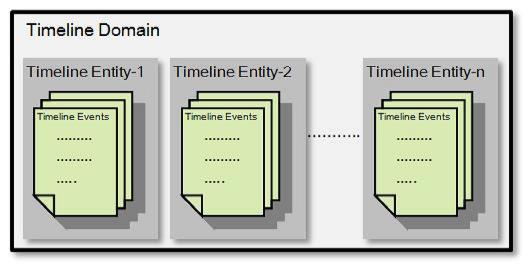

The Storage and retrieval of application’s current and historic information in a generic fashion is addressed in YARN through the Timeline Server. It has two responsibilities:
The collection and retrieval of information completely specific to an application or framework. For example, the Hadoop MapReduce framework can include pieces of information like number of map tasks, reduce tasks, counters…etc. Application developers can publish the specific information to the Timeline server via TimelineClient in the Application Master and/or the application’s containers.
This information is then queryable via REST APIs for rendering by application/framework specific UIs.
Previously this was supported purely for MapReduce jobs by the Application History Server. With the introduction of the timeline server, the Application History Server becomes just one use of the Timeline Server.
Generic information includes application level data such as
ApplicationSubmissionContext,Generic data is published by the YARN Resource Manager to the timeline store and used by its web-UI to display information about completed applications.
Current status
Future Plans

The Timeline Domain offers a namespace for Timeline server allowing users to host multiple entities, isolating them from other users and applications. Timeline server Security is defined at this level.
A “Domain” primarily stores owner info, read and write ACL information, created and modified time stamp information. Each Domain is identified by an ID which must be unique across all users in the YARN cluster.
A Timeline Entity contains the meta information of a conceptual entity and its related events.
The entity can be an application, an application attempt, a container or any user-defined object.
It contains Primary filters which will be used to index the entities in the Timeline Store. Accordingly, users/applications should carefully choose the information they want to store as the primary filters.
The remaining data can be stored as unindexed information. Each Entity is uniquely identified by an EntityId and EntityType.
A Timeline Event describes an event that is related to a specific Timeline Entity of an application.
Users are free to define what an event means —such as starting an application, getting allocated a container, an operation failures or other information considered relevant to users and cluster operators.
| Configuration Property | Description |
|---|---|
yarn.timeline-service.enabled |
In the server side it indicates whether timeline service is enabled or not. And in the client side, users can enable it to indicate whether client wants to use timeline service. If it’s enabled in the client side along with security, then yarn client tries to fetch the delegation tokens for the timeline server. Defaults to false. |
yarn.resourcemanager.system-metrics-publisher.enabled |
The setting that controls whether or not YARN system metrics are published on the timeline server by RM. Defaults to false. |
yarn.timeline-service.generic-application-history.enabled |
Indicate to clients whether to query generic application data from timeline history-service or not. If not enabled then application data is queried only from Resource Manager. Defaults to false. |
| Configuration Property | Description |
|---|---|
yarn.timeline-service.store-class |
Store class name for timeline store. Defaults to org.apache.hadoop.yarn.server.timeline.LeveldbTimelineStore. |
yarn.timeline-service.leveldb-timeline-store.path |
Store file name for leveldb timeline store. Defaults to ${hadoop.tmp.dir}/yarn/timeline. |
yarn.timeline-service.leveldb-timeline-store.ttl-interval-ms |
Length of time to wait between deletion cycles of leveldb timeline store in milliseconds. Defaults to 300000. |
yarn.timeline-service.leveldb-timeline-store.read-cache-size |
Size of read cache for uncompressed blocks for leveldb timeline store in bytes. Defaults to 104857600. |
yarn.timeline-service.leveldb-timeline-store.start-time-read-cache-size |
Size of cache for recently read entity start times for leveldb timeline store in number of entities. Defaults to 10000. |
yarn.timeline-service.leveldb-timeline-store.start-time-write-cache-size |
Size of cache for recently written entity start times for leveldb timeline store in number of entities. Defaults to 10000. |
yarn.timeline-service.recovery.enabled |
Defaults to false. |
yarn.timeline-service.state-store-class |
Store class name for timeline state store. Defaults to org.apache.hadoop.yarn.server.timeline.recovery.LeveldbTimelineStateStore. |
yarn.timeline-service.leveldb-state-store.path |
Store file name for leveldb timeline state store. |
| Configuration Property | Description |
|---|---|
yarn.timeline-service.hostname |
The hostname of the Timeline service web application. Defaults to 0.0.0.0 |
yarn.timeline-service.address |
Address for the Timeline server to start the RPC server. Defaults to ${yarn.timeline-service.hostname}:10200. |
yarn.timeline-service.webapp.address |
The http address of the Timeline service web application. Defaults to ${yarn.timeline-service.hostname}:8188. |
yarn.timeline-service.webapp.https.address |
The https address of the Timeline service web application. Defaults to ${yarn.timeline-service.hostname}:8190. |
yarn.timeline-service.bind-host |
The actual address the server will bind to. If this optional address is set, the RPC and webapp servers will bind to this address and the port specified in yarn.timeline-service.address and yarn.timeline-service.webapp.address, respectively. This is most useful for making the service listen on all interfaces by setting to 0.0.0.0. |
yarn.timeline-service.http-cross-origin.enabled |
Enables cross-origin support (CORS) for web services where cross-origin web response headers are needed. For example, javascript making a web services request to the timeline server. Defaults to false. |
yarn.timeline-service.http-cross-origin.allowed-origins |
Comma separated list of origins that are allowed. Values prefixed with regex: are interpreted as regular expressions. Values containing wildcards (*) are possible as well, here a regular expression is generated, the use is discouraged and support is only available for backward compatibility. Defaults to *. |
yarn.timeline-service.http-cross-origin.allowed-methods |
Comma separated list of methods that are allowed for web services needing cross-origin (CORS) support. Defaults to GET,POST,HEAD. |
yarn.timeline-service.http-cross-origin.allowed-headers |
Comma separated list of headers that are allowed for web services needing cross-origin (CORS) support. Defaults to X-Requested-With,Content-Type,Accept,Origin. |
yarn.timeline-service.http-cross-origin.max-age |
The number of seconds a pre-flighted request can be cached for web services needing cross-origin (CORS) support. Defaults to 1800. |
Note that the selection between the HTTP and HTTPS binding is made in the TimelineClient based upon the value of the YARN-wide configuration option yarn.http.policy; the HTTPS endpoint will be selected if this policy is HTTPS_ONLY.
| Configuration Property | Description |
|---|---|
yarn.timeline-service.ttl-enable |
Enable deletion of aged data within the timeline store. Defaults to true. |
yarn.timeline-service.ttl-ms |
Time to live for timeline store data in milliseconds. Defaults to 604800000 (7 days). |
yarn.timeline-service.handler-thread-count |
Handler thread count to serve the client RPC requests. Defaults to 10. |
yarn.timeline-service.client.max-retries |
The maximum number of retries for attempts to publish data to the timeline service.Defaults to 30. |
yarn.timeline-service.client.retry-interval-ms |
The interval in milliseconds between retries for the timeline service client. Defaults to 1000. |
yarn.timeline-service.generic-application-history.max-applications |
The max number of applications could be fetched by using REST API or application history protocol and shown in timeline server web ui. Defaults to 10000. |
The timeline service can host multiple UIs if enabled. The service can support both static web sites hosted in a directory or war files bundled. The web UI is then hosted on the timeline service HTTP port under the path configured.
| Configuration Property | Description |
|---|---|
yarn.timeline-service.ui-names |
Comma separated list of UIs that will be hosted. Defaults to none. |
yarn.timeline-service.ui-on-disk-path.$name |
For each of the ui-names, an on disk path should be specified to the directory service static content or the location of a web archive (war file). |
yarn.timeline-service.ui-web-path.$name |
For each of the ui-names, the web path should be specified relative to the Timeline server root. Paths should begin with a starting slash. |
Security can be enabled by setting yarn.timeline-service.http-authentication.type to kerberos, after which the following configuration options are available:
| Configuration Property | Description |
|---|---|
yarn.timeline-service.http-authentication.type |
Defines authentication used for the timeline server HTTP endpoint. Supported values are: simple / kerberos / #AUTHENTICATION_HANDLER_CLASSNAME#. Defaults to simple. |
yarn.timeline-service.http-authentication.simple.anonymous.allowed |
Indicates if anonymous requests are allowed by the timeline server when using ‘simple’ authentication. Defaults to true. |
yarn.timeline-service.principal |
The Kerberos principal for the timeline server. |
yarn.timeline-service.keytab |
The Kerberos keytab for the timeline server. Defaults on Unix to /etc/krb5.keytab. |
yarn.timeline-service.delegation.key.update-interval |
Defaults to 86400000 (1 day). |
yarn.timeline-service.delegation.token.renew-interval |
Defaults to 86400000 (1 day). |
yarn.timeline-service.delegation.token.max-lifetime |
Defaults to 604800000 (7 days). |
yarn.timeline-service.client.best-effort |
Should the failure to obtain a delegation token be considered an application failure (option = false), or should the client attempt to continue to publish information without it (option=true). Default: false |
Following are the basic configuration to start Timeline server.
<property> <description>Indicate to clients whether Timeline service is enabled or not. If enabled, the TimelineClient library used by end-users will post entities and events to the Timeline server.</description> <name>yarn.timeline-service.enabled</name> <value>true</value> </property> <property> <description>The setting that controls whether yarn system metrics is published on the timeline server or not by RM.</description> <name>yarn.resourcemanager.system-metrics-publisher.enabled</name> <value>true</value> </property> <property> <description>Indicate to clients whether to query generic application data from timeline history-service or not. If not enabled then application data is queried only from Resource Manager.</description> <name>yarn.timeline-service.generic-application-history.enabled</name> <value>true</value> </property>
Assuming all the aforementioned configurations are set properly admins can start the Timeline server/history service with the following command:
yarn timelineserver
To start the Timeline server / history service as a daemon, the command is
$HADOOP_YARN_HOME/sbin/yarn-daemon.sh start timelineserver
Users can access applications’ generic historic data via the command line below
$ yarn application -status <Application ID> $ yarn applicationattempt -list <Application ID> $ yarn applicationattempt -status <Application Attempt ID> $ yarn container -list <Application Attempt ID> $ yarn container -status <Container ID>
Note that the same commands are usable to obtain the corresponding information about running applications.
Developers can define what information they want to record for their applications by constructing TimelineEntity and TimelineEvent objects then publishing the entities and events to the Timeline Server via the TimelineClient API.
Here is an example:
// Create and start the Timeline client
TimelineClient client = TimelineClient.createTimelineClient();
client.init(conf);
client.start();
try {
TimelineDomain myDomain = new TimelineDomain();
myDomain.setId("MyDomain");
// Compose other Domain info ....
client.putDomain(myDomain);
TimelineEntity myEntity = new TimelineEntity();
myEntity.setDomainId(myDomain.getId());
myEntity.setEntityType("APPLICATION");
myEntity.setEntityId("MyApp1");
// Compose other entity info
TimelinePutResponse response = client.putEntities(entity);
TimelineEvent event = new TimelineEvent();
event.setEventType("APP_FINISHED");
event.setTimestamp(System.currentTimeMillis());
event.addEventInfo("Exit Status", "SUCCESS");
// Compose other Event info ....
myEntity.addEvent(event);
TimelinePutResponse response = timelineClient.putEntities(entity);
} catch (IOException e) {
// Handle the exception
} catch (RuntimeException e) {
// In Hadoop 2.6, if attempts submit information to the Timeline Server fail more than the retry limit,
// a RuntimeException will be raised. This may change in future releases, being
// replaced with a IOException that is (or wraps) that which triggered retry failures.
} catch (YarnException e) {
// Handle the exception
} finally {
// Stop the Timeline client
client.stop();
}
TimelineClient implementation class is a subclass of the YARN Service API; it can be placed under a CompositeService to ease its lifecycle management.putEntities() call is a TimelinePutResponse object. This contains a (hopefully empty) list of those timeline entities reject by the timeline server, along with an error code indicating the cause of each failure.In Hadoop 2.6 and 2.7, the error codes are:
| Error Code | Description |
|---|---|
| 1 | No start time |
| 2 | IOException |
| 3 | System Filter conflict (reserved filter key used) |
| 4 | Access Denied |
| 5 | No domain |
| 6 | Forbidden relation |
Further error codes may be defined in future.
Note : Following are the points which need to be observed when updating a entity.
Users can access the generic historic information of applications via web UI:
http(s)://<timeline server http(s) address:port>/applicationhistory
Querying the timeline server is currently only supported via REST API calls; there is no API client implemented in the YARN libraries. In Java, the Jersey client is effective at querying the server, even in secure mode (provided the caller has the appropriate Kerberos tokens or keytab).
The v1 REST API is implemented at under the path, /ws/v1/timeline/ on the Timeline Server web service.
Here is a non-normative description of the API.
GET /ws/v1/timeline/
Returns a JSON object describing the server instance and version information.
{
About: "Timeline API",
timeline-service-version: "3.0.0-SNAPSHOT",
timeline-service-build-version: "3.0.0-SNAPSHOT from fcd0702c10ce574b887280476aba63d6682d5271 by zshen source checksum e9ec74ea3ff7bc9f3d35e9cac694fb",
timeline-service-version-built-on: "2015-05-13T19:45Z",
hadoop-version: "3.0.0-SNAPSHOT",
hadoop-build-version: "3.0.0-SNAPSHOT from fcd0702c10ce574b887280476aba63d6682d5271 by zshen source checksum 95874b192923b43cdb96a6e483afd60",
hadoop-version-built-on: "2015-05-13T19:44Z"
}
/ws/v1/timeline/domain/ws/v1/timeline/domainGET /ws/v1/timeline/domain?owner=$OWNER
Returns a list of domains belonging to a specific user, in the JSON-marshalled TimelineDomains data structure.
The owner MUST be set on a GET which is not authenticated.
On an authenticated request, the owner defaults to the caller.
PUT /ws/v1/timeline/domain
A PUT of a serialized TimelineDomain structure to this path will add the domain to the list of domains owned by the specified/current user. A successful operation returns status code of 200 and a TimelinePutResponse containing no errors.
/ws/v1/timeline/domain/{domainId}Returns a JSON-marshalled TimelineDomain structure describing a domain.
If the domain is not found, then an HTTP 404 response is returned.
/ws/v1/timeline/domainCreates a new timeline domain, or overrides an existing one.
When attempting to create a new domain, the ID in the submission MUST be unique across all domains in the cluster.
When attempting to update an existing domain, the ID of that domain must be set. The submitter must have the appropriate permissions to update the domain.
submission: TimelineDomain
response: TimelinePutResponse
/ws/v1/timeline/domainRetrieves a list of all domains of a user.
If an owner is specified, that owner name overrides that of the caller.
| Query Parameter | Description |
|---|---|
owner |
owner of the domains to list |
GET http://localhost:8188/ws/v1/timeline/domain?owner=alice
{
"domains":
[
{
"id":"DS_DOMAIN_2",
"owner":"alice",
"readers":"peter",
"writers":"john",
"createdtime":1430425000337,
"modifiedtime":1430425000337
},
{
"id":"DS_DOMAIN_1",
"owner":"alice",
"readers":"bar",
"writers":"foo",
"createdtime":1430424955963,
"modifiedtime":1430424955963
}
,
{"id":"DEFAULT",
"description":"System Default Domain",
"owner":"alice",
"readers":"*",
"writers":"*",
"createdtime":1430424022699,
"modifiedtime":1430424022699
}
]
}
response: TimelineDomains
If the user lacks the permission to list the domains of the specified owner, an TimelineDomains response with no domain listings is returned.
/ws/v1/timeline/domain/{domainId}Retrieves the details of a single domain
GET http://localhost:8188/ws/v1/timeline/domain/DS_DOMAIN_1
Response: TimelineDomain
{
"id":"DS_DOMAIN_1",
"owner":"zshen",
"readers":"bar",
"writers":"foo",
"createdtime":1430424955963,
"modifiedtime":1430424955963
}
If the user lacks the permission to query the details of that domain, a 404, not found exception is returned —the same response which is returned if there is no entry with that ID.
With the Posting Entities API, you can post the entities and events, which contain the per-framework information you want to record, to the timeline server.
http(s)://<timeline server http(s) address:port>/ws/v1/timeline
POST
None
TimelinePutResponseHTTP Request:
POST http://<timeline server http address:port>/ws/v1/timeline
Request Header:
POST /ws/v1/timeline HTTP/1.1 Accept: application/json Content-Type: application/json Transfer-Encoding: chunked
Request Body:
{
"entities" : [ {
"entity" : "entity id 0",
"entitytype" : "entity type 0",
"relatedentities" : {
"test ref type 2" : [ "test ref id 2" ],
"test ref type 1" : [ "test ref id 1" ]
},
"events" : [ {
"timestamp" : 1395818851590,
"eventtype" : "event type 0",
"eventinfo" : {
"key2" : "val2",
"key1" : "val1"
}
}, {
"timestamp" : 1395818851590,
"eventtype" : "event type 1",
"eventinfo" : {
"key2" : "val2",
"key1" : "val1"
}
} ],
"primaryfilters" : {
"pkey2" : [ "pval2" ],
"pkey1" : [ "pval1" ]
},
"otherinfo" : {
"okey2" : "oval2",
"okey1" : "oval1"
},
"starttime" : 1395818851588
}, {
"entity" : "entity id 1",
"entitytype" : "entity type 0",
"relatedentities" : {
"test ref type 2" : [ "test ref id 2" ],
"test ref type 1" : [ "test ref id 1" ]
},
"events" : [ {
"timestamp" : 1395818851590,
"eventtype" : "event type 0",
"eventinfo" : {
"key2" : "val2",
"key1" : "val1"
}
}, {
"timestamp" : 1395818851590,
"eventtype" : "event type 1",
"eventinfo" : {
"key2" : "val2",
"key1" : "val1"
}
} ],
"primaryfilters" : {
"pkey2" : [ "pval2" ],
"pkey1" : [ "pval1" ]
},
"otherinfo" : {
"okey2" : "oval2",
"okey1" : "oval1"
},
"starttime" : 1395818851590
} ]
}
Required fields
Entity: type and id. starttime is required unless the entity contains one or more event). Event: type and timestamp.
With the Timeline Entity List API, you can retrieve a list of entity object, sorted by the starting timestamp for the entity, descending. The starting timestamp of an entity can be a timestamp specified by the your application. If it is not explicitly specified, it will be chosen by the store to be the earliest timestamp of the events received in the first post for the entity.
Use the following URI to obtain all the entity objects of a given entityType.
http(s)://<timeline server http(s) address:port>/ws/v1/timeline/{entityType}
GET
limit - A limit on the number of entities to return. If null, defaults to 100.windowStart - The earliest start timestamp to retrieve (exclusive). If null, defaults to retrieving all entities until the limit is reached.windowEnd - The latest start timestamp to retrieve (inclusive). If null, defaults to the max value of Long.fromId - If fromId is not null, retrieve entities earlier than and including the specified ID. If no start time is found for the specified ID, an empty list of entities will be returned. The windowEnd parameter will take precedence if the start time of this entity falls later than windowEnd.fromTs - If fromTs is not null, ignore entities that were inserted into the store after the given timestamp. The entity’s insert timestamp used for this comparison is the store’s system time when the first put for the entity was received (not the entity’s start time).primaryFilter - Retrieves only entities that have the specified primary filter. If null, retrieves all entities. This is an indexed retrieval, and no entities that do not match the filter are scanned.secondaryFilters - Retrieves only entities that have exact matches for all the specified filters in their primary filters or other info. This is not an indexed retrieval, so all entities are scanned but only those matching the filters are returned.EVENTS, RELATED_ENTITIES, PRIMARY_FILTERS, OTHER_INFO, LAST_EVENT_ONLY. If the set of fields contains LAST_EVENT_ONLY and not EVENTS, the most recent event for each entity is retrieved. If null, retrieves all fields.Note that the value of the key/value pair for primaryFilter and secondaryFilters parameters can be of different data types, and matching is data type sensitive. Users need to format the value properly. For example, 123 and "123" means an integer and a string respectively. If the entity has a string "123" for primaryFilter, but the parameter is set to the integer 123, the entity will not be matched. Similarly, true means a boolean while "true" means a string. In general, the value will be casted as a certain Java type in consistent with jackson library parsing a JSON clip.
entities (Timeline Entity List) ObjectWhen you make a request for the list of timeline entities, the information will be returned as a collection of container objects. See also Timeline Entity for syntax of the timeline entity object.
| Item | Data Type | Description |
|---|---|---|
entities |
array of timeline entity objects(JSON) | The collection of timeline entity objects |
HTTP Request:
GET http://localhost:8188/ws/v1/timeline/DS_APP_ATTEMPT
Response Header:
HTTP/1.1 200 OK Content-Type: application/json Transfer-Encoding: chunked
Response Body:
{
"entities":[
{
"entitytype":"DS_APP_ATTEMPT",
"entity":"appattempt_1430424020775_0004_000001",
"events":[
{
"timestamp":1430425008796,
"eventtype":"DS_APP_ATTEMPT_END",
"eventinfo": { }
}
{
"timestamp":1430425004161,
"eventtype":"DS_APP_ATTEMPT_START",
"eventinfo": { }
}
]
"starttime":1430425004161,
"domain":"DS_DOMAIN_2",
"relatedentities": { },
"primaryfilters":
{
"user":["zshen"]
},
"otherinfo": { }
}
{
"entitytype":"DS_APP_ATTEMPT",
"entity":"appattempt_1430424020775_0003_000001",
"starttime":1430424959169,
"domain":"DS_DOMAIN_1",
"events":[
{
"timestamp":1430424963836,
"eventinfo": { }
}
{
"timestamp":1430424959169,
"eventinfo": { }
}
]
"relatedentities": { },
"primaryfilters": {
"user":["zshen"]
},
"otherinfo": { }
}
]
}
With the Timeline Entity API, you can retrieve the entity information for a given entity identifier.
Use the following URI to obtain the entity object identified by the entityType value and the entityId value.
http(s)://<timeline server http(s) address:port>/ws/v1/timeline/{entityType}/{entityId}
GET
EVENTS, RELATED_ENTITIES, PRIMARY_FILTERS, OTHER_INFO, LAST_EVENT_ONLY. If the set of fields contains LAST_EVENT_ONLY and not EVENTS, the most recent event for each entity is retrieved. If null, retrieves all fields.entity (Timeline Entity) Object:See also Timeline Event List for syntax of the timeline event object. Note that value of primaryfilters and otherinfo is an Object instead of a String.
| Item | Data Type | Description |
|---|---|---|
entity |
string | The entity id |
entitytype |
string | The entity type |
relatedentities |
map | The related entities’ identifiers, which are organized in a map of entityType : [entity1, entity2, …] |
events |
list | The events of the entity |
primaryfilters |
map | The primary filters of the entity, which are organized in a map of key : [value1, value2, …] |
otherinfo |
map | The other information of the entity, which is organized in a map of key : value |
starttime |
long | The start time of the entity |
HTTP Request:
GET http://localhost:8188/ws/v1/timeline/DS_APP_ATTEMPT/appattempt_1430424020775_0003_000001
Response Header:
HTTP/1.1 200 OK Content-Type: application/json Transfer-Encoding: chunked
Response Body:
{
"events":[
{
"timestamp":1430424959169,
"eventtype":"DS_APP_ATTEMPT_START",
"eventinfo": {}}],
"entitytype":"DS_APP_ATTEMPT",
"entity":"appattempt_1430424020775_0003_000001",
"starttime":1430424959169,
"domain":"DS_DOMAIN_1",
"relatedentities": {},
"primaryfilters": {
"user":["zshen"]
},
"otherinfo": {}
}
]
}
With the Timeline Events API, you can retrieve the event objects for a list of entities all of the same entity type. The events for each entity are sorted in order of their timestamps, descending.
Use the following URI to obtain the event objects of the given entityType.
http(s)://<timeline server http(s) address:port>/ws/v1/timeline/{entityType}/events
GET
entityId - The entity IDs to retrieve events for. If null, no events will be returned. Multiple entityIds can be given as comma separated values.limit - A limit on the number of events to return for each entity. If null, defaults to 100 events per entity.windowStart - If not null, retrieves only events later than the given time (exclusive)windowEnd - If not null, retrieves only events earlier than the given time (inclusive)eventType - Restricts the events returned to the given types. If null, events of all types will be returned. Multiple eventTypes can be given as comma separated values.events (Timeline Entity List) ObjectWhen you make a request for the list of timeline events, the information will be returned as a collection of event objects.
| Item | Data Type | Description |
|---|---|---|
events |
array of timeline event objects(JSON) | The collection of timeline event objects |
Below is the elements of a single event object. Note that value of eventinfo and otherinfo is an Object instead of a String.
| Item | Data Type | Description |
|---|---|---|
eventtype |
string | The event type |
eventinfo |
map | The information of the event, which is organized in a map of key : value |
timestamp |
long | The timestamp of the event |
HTTP Request:
GET http://localhost:8188/ws/v1/timeline/DS_APP_ATTEMPT/events?entityId=appattempt_1430424020775_0003_000001
Response Header:
HTTP/1.1 200 OK Content-Type: application/json Transfer-Encoding: chunked
Response Body:
{
"events": [
{
"entity":"appattempt_1430424020775_0003_000001",
"entitytype":"DS_APP_ATTEMPT"}
"events":[
{
"timestamp":1430424963836,
"eventtype":"DS_APP_ATTEMPT_END",
"eventinfo":{}},
{
"timestamp":1430424959169,
"eventtype":"DS_APP_ATTEMPT_START",
"eventinfo":{}}
],
}
]
}
Users can access the generic historic information of applications via REST APIs.
With the about API, you can get an timeline about resource that contains generic history REST API description and version information.
It is essentially a XML/JSON-serialized form of the YARN TimelineAbout structure.
Use the following URI to obtain an timeline about object.
http(s)://<timeline server http(s) address:port>/ws/v1/applicationhistory/about
GET
None
about (Application) Object:| Item | Data Type | Description |
|---|---|---|
About |
string | The description about the service |
timeline-service-version |
string | The timeline service version |
timeline-service-build-version |
string | The timeline service build version |
timeline-service-version-built-on |
string | On what time the timeline service is built |
hadoop-version |
string | Hadoop version |
hadoop-build-version |
string | Hadoop build version |
hadoop-version-built-on |
string | On what time Hadoop is built |
HTTP Request:
http://localhost:8188/ws/v1/applicationhistory/about
Response Header:
HTTP/1.1 200 OK Content-Type: application/json Transfer-Encoding: chunked
Response Body:
{
About: "Generic History Service API",
timeline-service-version: "3.0.0-SNAPSHOT",
timeline-service-build-version: "3.0.0-SNAPSHOT from fcd0702c10ce574b887280476aba63d6682d5271 by zshen source checksum e9ec74ea3ff7bc9f3d35e9cac694fb",
timeline-service-version-built-on: "2015-05-13T19:45Z",
hadoop-version: "3.0.0-SNAPSHOT",
hadoop-build-version: "3.0.0-SNAPSHOT from fcd0702c10ce574b887280476aba63d6682d5271 by zshen source checksum 95874b192923b43cdb96a6e483afd60",
hadoop-version-built-on: "2015-05-13T19:44Z"
}
HTTP Request:
GET http://localhost:8188/ws/v1/applicationhistory/about Accept: application/xml
Response Header:
HTTP/1.1 200 OK Content-Type: application/xml Content-Length: 748
Response Body:
<?xml version="1.0" encoding="UTF-8" standalone="yes"?> <about> <About>Generic History Service API</About> <hadoop-build-version>3.0.0-SNAPSHOT from fcd0702c10ce574b887280476aba63d6682d5271 by zshen source checksum 95874b192923b43cdb96a6e483afd60</hadoop-build-version> <hadoop-version>3.0.0-SNAPSHOT</hadoop-version> <hadoop-version-built-on>2015-05-13T19:44Z</hadoop-version-built-on> <timeline-service-build-version>3.0.0-SNAPSHOT from fcd0702c10ce574b887280476aba63d6682d5271 by zshen source checksum e9ec74ea3ff7bc9f3d35e9cac694fb</timeline-service-build-version> <timeline-service-version>3.0.0-SNAPSHOT</timeline-service-version> <timeline-service-version-built-on>2015-05-13T19:45Z</timeline-service-version-built-on> </about>
With the Application List API, you can obtain a collection of resources, each of which represents an application. When you run a GET operation on this resource, you obtain a collection of application objects.
http(s)://<timeline server http(s) address:port>/ws/v1/applicationhistory/apps
GET
states - applications matching the given application states, specified as a comma-separated list
finalStatus - the final status of the application - reported by the application itself
user - user name
queue - queue name
limit - total number of app objects to be returned
startedTimeBegin - applications with start time beginning with this time, specified in ms since epoch
startedTimeEnd - applications with start time ending with this time, specified in ms since epoch
finishedTimeBegin - applications with finish time beginning with this time, specified in ms since epoch
finishedTimeEnd - applications with finish time ending with this time, specified in ms since epoch
applicationTypes - applications matching the given application types, specified as a comma-separated list
apps (Application List) ObjectWhen you make a request for the list of applications, the information will be returned as a collection of application objects. See also Application for syntax of the application object.
| Item | Data Type | Description |
|---|---|---|
app |
array of app objects(JSON)/zero or more application objects(XML) | The collection of application objects |
HTTP Request:
GET http://<timeline server http address:port>/ws/v1/applicationhistory/apps
Response Header:
HTTP/1.1 200 OK Content-Type: application/json Transfer-Encoding: chunked
Response Body:
{
"app":
[
{
"appId":"application_1430424020775_0004",
"currentAppAttemptId":"appattempt_1430424020775_0004_000001",
"user":"zshen",
"name":"DistributedShell",
"queue":"default",
"type":"YARN",
"host":"d-69-91-129-173.dhcp4.washington.edu/69.91.129.173",
"rpcPort":-1,
"appState":"FINISHED",
"progress":100.0,
"diagnosticsInfo":"",
"originalTrackingUrl":"N/A",
"trackingUrl":"http://d-69-91-129-173.dhcp4.washington.edu:8088/proxy/application_1430424020775_0004/",
"finalAppStatus":"SUCCEEDED",
"submittedTime":1430425001004,
"startedTime":1430425001004,
"finishedTime":1430425008861,
"elapsedTime":7857,
"unmanagedApplication":"false",
"applicationPriority":0,
"appNodeLabelExpression":"",
"amNodeLabelExpression":""
},
{
"appId":"application_1430424020775_0003",
"currentAppAttemptId":"appattempt_1430424020775_0003_000001",
"user":"zshen",
"name":"DistributedShell",
"queue":"default",
"type":"YARN",
"host":"d-69-91-129-173.dhcp4.washington.edu/69.91.129.173",
"rpcPort":-1,
"appState":"FINISHED",
"progress":100.0,
"diagnosticsInfo":"",
"originalTrackingUrl":"N/A",
"trackingUrl":"http://d-69-91-129-173.dhcp4.washington.edu:8088/proxy/application_1430424020775_0003/",
"finalAppStatus":"SUCCEEDED",
"submittedTime":1430424956650,
"startedTime":1430424956650,
"finishedTime":1430424963907,
"elapsedTime":7257,
"unmanagedApplication":"false",
"applicationPriority":0,
"appNodeLabelExpression":"",
"amNodeLabelExpression":""
},
{
"appId":"application_1430424020775_0002",
"currentAppAttemptId":"appattempt_1430424020775_0002_000001",
"user":"zshen",
"name":"DistributedShell",
"queue":"default",
"type":"YARN",
"host":"d-69-91-129-173.dhcp4.washington.edu/69.91.129.173",
"rpcPort":-1,
"appState":"FINISHED",
"progress":100.0,
"diagnosticsInfo":"",
"originalTrackingUrl":"N/A",
"trackingUrl":"http://d-69-91-129-173.dhcp4.washington.edu:8088/proxy/application_1430424020775_0002/",
"finalAppStatus":"SUCCEEDED",
"submittedTime":1430424769395,
"startedTime":1430424769395,
"finishedTime":1430424776594,
"elapsedTime":7199,
"unmanagedApplication":"false",
"applicationPriority":0,
"appNodeLabelExpression":"",
"amNodeLabelExpression":""
},
{
"appId":"application_1430424020775_0001",
"currentAppAttemptId":"appattempt_1430424020775_0001_000001",
"user":"zshen",
"name":"QuasiMonteCarlo",
"queue":"default",
"type":"MAPREDUCE",
"host":"localhost",
"rpcPort":56264,
"appState":"FINISHED",
"progress":100.0,
"diagnosticsInfo":"",
"originalTrackingUrl":"http://d-69-91-129-173.dhcp4.washington.edu:19888/jobhistory/job/job_1430424020775_0001",
"trackingUrl":"http://d-69-91-129-173.dhcp4.washington.edu:8088/proxy/application_1430424020775_0001/",
"finalAppStatus":"SUCCEEDED",
"submittedTime":1430424053809,
"startedTime":1430424072153,
"finishedTime":1430424776594,
"elapsedTime":18344,
"applicationTags":"mrapplication,ta-example",
"unmanagedApplication":"false",
"applicationPriority":0,
"appNodeLabelExpression":"",
"amNodeLabelExpression":""
}
]
}
HTTP Request:
GET http://localhost:8188/ws/v1/applicationhistory/apps
Response Header:
HTTP/1.1 200 OK Content-Type: application/xml Content-Length: 1710
Response Body:
<?xml version="1.0" encoding="UTF-8" standalone="yes"?>
<apps>
<app>
<appId>application_1430424020775_0004</appId>
<currentAppAttemptId>appattempt_1430424020775_0004_000001</currentAppAttemptId>
<user>zshen</user>
<name>DistributedShell</name>
<queue>default</queue>
<type>YARN</type>
<host>d-69-91-129-173.dhcp4.washington.edu/69.91.129.173</host>
<rpcPort>-1</rpcPort>
<appState>FINISHED</appState>
<progress>100.0</progress>
<diagnosticsInfo></diagnosticsInfo>
<originalTrackingUrl>N/A</originalTrackingUrl>
<trackingUrl>http://d-69-91-129-173.dhcp4.washington.edu:8088/proxy/application_1430424020775_0004/</trackingUrl>
<finalAppStatus>SUCCEEDED</finalAppStatus>
<submittedTime>1430425001004</submittedTime>
<startedTime>1430425001004</startedTime>
<finishedTime>1430425008861</finishedTime>
<elapsedTime>7857</elapsedTime>
<unmanagedApplication>false</unmanagedApplication>
<applicationPriority>0</applicationPriority>
<appNodeLabelExpression></appNodeLabelExpression>
<amNodeLabelExpression></amNodeLabelExpression>
</app>
<app>
<appId>application_1430424020775_0003</appId>
<currentAppAttemptId>appattempt_1430424020775_0003_000001</currentAppAttemptId>
<user>zshen</user>
<name>DistributedShell</name>
<queue>default</queue>
<type>YARN</type>
<host>d-69-91-129-173.dhcp4.washington.edu/69.91.129.173</host>
<rpcPort>-1</rpcPort>
<appState>FINISHED</appState>
<progress>100.0</progress>
<diagnosticsInfo></diagnosticsInfo>
<originalTrackingUrl>N/A</originalTrackingUrl>
<trackingUrl>http://d-69-91-129-173.dhcp4.washington.edu:8088/proxy/application_1430424020775_0003/</trackingUrl>
<finalAppStatus>SUCCEEDED</finalAppStatus>
<submittedTime>1430424956650</submittedTime>
<startedTime>1430424956650</startedTime>
<finishedTime>1430424963907</finishedTime>
<elapsedTime>7257</elapsedTime>
<unmanagedApplication>false</unmanagedApplication>
<applicationPriority>0</applicationPriority>
<appNodeLabelExpression></appNodeLabelExpression>
<amNodeLabelExpression></amNodeLabelExpression>
</app>
<app>
<appId>application_1430424020775_0002</appId>
<currentAppAttemptId>appattempt_1430424020775_0002_000001</currentAppAttemptId>
<user>zshen</user>
<name>DistributedShell</name>
<queue>default</queue>
<type>YARN</type>
<host>d-69-91-129-173.dhcp4.washington.edu/69.91.129.173</host>
<rpcPort>-1</rpcPort>
<appState>FINISHED</appState>
<progress>100.0</progress>
<diagnosticsInfo></diagnosticsInfo>
<originalTrackingUrl>N/A</originalTrackingUrl>
<trackingUrl>http://d-69-91-129-173.dhcp4.washington.edu:8088/proxy/application_1430424020775_0002/</trackingUrl>
<finalAppStatus>SUCCEEDED</finalAppStatus>
<submittedTime>1430424769395</submittedTime>
<startedTime>1430424769395</startedTime>
<finishedTime>1430424776594</finishedTime>
<elapsedTime>7199</elapsedTime>
<unmanagedApplication>false</unmanagedApplication>
<applicationPriority>0</applicationPriority>
<appNodeLabelExpression></appNodeLabelExpression>
<amNodeLabelExpression></amNodeLabelExpression>
</app>
<app>
<appId>application_1430424020775_0001</appId>
<currentAppAttemptId>appattempt_1430424020775_0001_000001</currentAppAttemptId>
<user>zshen</user>
<name>QuasiMonteCarlo</name>
<queue>default</queue>
<type>MAPREDUCE</type>
<host>localhost</host>
<rpcPort>56264</rpcPort>
<appState>FINISHED</appState>
<progress>100.0</progress>
<diagnosticsInfo></diagnosticsInfo>
<originalTrackingUrl>http://d-69-91-129-173.dhcp4.washington.edu:19888/jobhistory/job/job_1430424020775_0001</originalTrackingUrl>
<trackingUrl>http://d-69-91-129-173.dhcp4.washington.edu:8088/proxy/application_1430424020775_0001/</trackingUrl>
<finalAppStatus>SUCCEEDED</finalAppStatus>
<submittedTime>1430424053809</submittedTime>
<startedTime>1430424053809</startedTime>
<finishedTime>1430424072153</finishedTime>
<elapsedTime>18344</elapsedTime>
<applicationTags>mrapplication,ta-example</applicationTags>
<unmanagedApplication>false</unmanagedApplication>
<applicationPriority>0</applicationPriority>
<appNodeLabelExpression></appNodeLabelExpression>
<amNodeLabelExpression></amNodeLabelExpression>
</app>
</apps>
With the Application API, you can get an application resource contains information about a particular application that was running on an YARN cluster.
It is essentially a XML/JSON-serialized form of the YARN ApplicationReport structure.
Use the following URI to obtain an application object identified by the appid value.
http(s)://<timeline server http(s) address:port>/ws/v1/applicationhistory/apps/{appid}
GET
None
app (Application) Object:| Item | Data Type | Description |
|---|---|---|
appId |
string | The application ID |
user |
string | The user who started the application |
name |
string | The application name |
type |
string | The application type |
queue |
string | The queue to which the application submitted |
appState |
string | The application state according to the ResourceManager - valid values are members of the YarnApplicationState enum: FINISHED, FAILED, KILLED |
finalStatus |
string | The final status of the application if finished - reported by the application itself - valid values are: UNDEFINED, SUCCEEDED, FAILED, KILLED |
progress |
float | The reported progress of the application as a percent. Long-lived YARN services may not provide a meaningful value here —or use it as a metric of actual vs desired container counts |
trackingUrl |
string | The web URL of the application (via the RM Proxy) |
originalTrackingUrl |
string | The actual web URL of the application |
diagnosticsInfo |
string | Detailed diagnostics information on a completed application |
startedTime |
long | The time in which application started (in ms since epoch) |
finishedTime |
long | The time in which the application finished (in ms since epoch) |
elapsedTime |
long | The elapsed time since the application started (in ms) |
allocatedMB |
int | The sum of memory in MB allocated to the application’s running containers |
allocatedVCores |
int | The sum of virtual cores allocated to the application’s running containers |
currentAppAttemptId |
string | The latest application attempt ID |
host |
string | The host of the ApplicationMaster |
rpcPort |
int | The RPC port of the ApplicationMaster; zero if no IPC service declared |
applicationTags |
string | The application tags. |
unmanagedApplication |
boolean | Is the application unmanaged. |
applicationPriority |
int | Priority of the submitted application. |
appNodeLabelExpression |
string | Node Label expression which is used to identify the nodes on which application’s containers are expected to run by default. |
amNodeLabelExpression |
string | Node Label expression which is used to identify the node on which application’s AM container is expected to run. |
HTTP Request:
http://localhost:8188/ws/v1/applicationhistory/apps/application_1430424020775_0001
Response Header:
HTTP/1.1 200 OK Content-Type: application/json Transfer-Encoding: chunked
Response Body:
{
"appId": "application_1430424020775_0001",
"currentAppAttemptId": "appattempt_1430424020775_0001_000001",
"user": "zshen",
"name": "QuasiMonteCarlo",
"queue": "default",
"type": "MAPREDUCE",
"host": "localhost",
"rpcPort": 56264,
"appState": "FINISHED",
"progress": 100.0,
"diagnosticsInfo": "",
"originalTrackingUrl": "http://d-69-91-129-173.dhcp4.washington.edu:19888/jobhistory/job/job_1430424020775_0001",
"trackingUrl": "http://d-69-91-129-173.dhcp4.washington.edu:8088/proxy/application_1430424020775_0001/",
"finalAppStatus": "SUCCEEDED",
"submittedTime": 1430424053809,
"startedTime": 1430424053809,
"finishedTime": 1430424072153,
"elapsedTime": 18344,
"applicationTags": mrapplication,tag-example,
"unmanagedApplication": "false",
"applicationPriority": 0,
"appNodeLabelExpression": "",
"amNodeLabelExpression": ""
}
HTTP Request:
GET http://localhost:8188/ws/v1/applicationhistory/apps/application_1430424020775_0001 Accept: application/xml
Response Header:
HTTP/1.1 200 OK Content-Type: application/xml Content-Length: 873
Response Body:
<?xml version="1.0" encoding="UTF-8" standalone="yes"?> <app> <appId>application_1430424020775_0001</appId> <currentAppAttemptId>appattempt_1430424020775_0001_000001</currentAppAttemptId> <user>zshen</user> <name>QuasiMonteCarlo</name> <queue>default</queue> <type>MAPREDUCE</type> <host>localhost</host> <rpcPort>56264</rpcPort> <appState>FINISHED</appState> <progress>100.0</progress> <diagnosticsInfo></diagnosticsInfo> <originalTrackingUrl>http://d-69-91-129-173.dhcp4.washington.edu:19888/jobhistory/job/job_1430424020775_0001</originalTrackingUrl> <trackingUrl>http://d-69-91-129-173.dhcp4.washington.edu:8088/proxy/application_1430424020775_0001/</trackingUrl> <finalAppStatus>SUCCEEDED</finalAppStatus> <submittedTime>1430424053809</submittedTime> <startedTime>1430424053809</startedTime> <finishedTime>1430424072153</finishedTime> <elapsedTime>18344</elapsedTime> <applicationTags>mrapplication,ta-example</applicationTags> <unmanagedApplication>false</unmanagedApplication> <applicationPriority>0</applicationPriority> <appNodeLabelExpression><appNodeLabelExpression> <amNodeLabelExpression><amNodeLabelExpression> </app>
With the Application Attempt List API, you can obtain a collection of resources, each of which represents an application attempt. When you run a GET operation on this resource, you obtain a collection of application attempt objects.
Use the following URI to obtain all the attempt objects of an application identified by the appid value.
http(s)://<timeline server http(s) address:port>/ws/v1/applicationhistory/apps/{appid}/appattempts
GET
None
appattempts (Application Attempt List) ObjectWhen you make a request for the list of application attempts, the information will be returned as a collection of application attempt objects. See Application Attempt for the syntax of the application attempt object.
| Item | Data Type | Description |
|---|---|---|
appattempt |
array of appattempt objects(JSON)/zero or more application attempt objects(XML) | The collection of application attempt objects |
HTTP Request:
GET http://localhost:8188/ws/v1/applicationhistory/apps/application_1430424020775_0001/appattempts
Response Header:
HTTP/1.1 200 OK Content-Type: application/json Transfer-Encoding: chunked
Response Body:
{
"appAttempt": [
{
"appAttemptId": "appattempt_1430424020775_0001_000001",
"host": "localhost",
"rpcPort": 56264,
"trackingUrl": "http://d-69-91-129-173.dhcp4.washington.edu:8088/proxy/application_1430424020775_0001/",
"originalTrackingUrl": "http://d-69-91-129-173.dhcp4.washington.edu:19888/jobhistory/job/job_1430424020775_0001",
"diagnosticsInfo": "",
"appAttemptState": "FINISHED",
"amContainerId": "container_1430424020775_0001_01_000001"
}
]
}
HTTP Request:
GET http://localhost:8188/ws/v1/applicationhistory/apps/application_1430424020775_0001/appattempts Accept: application/xml
Response Header:
HTTP/1.1 200 OK Content-Type: application/xml
Response Body:
<?xml version="1.0" encoding="UTF-8" standalone="yes"?>
<appAttempts>
<appAttempt>
<appAttemptId>appattempt_1430424020775_0001_000001</appAttemptId>
<host>localhost</host>
<rpcPort>56264</rpcPort>
<trackingUrl>http://d-69-91-129-173.dhcp4.washington.edu:8088/proxy/application_1430424020775_0001/</trackingUrl>
<originalTrackingUrl>http://d-69-91-129-173.dhcp4.washington.edu:19888/jobhistory/job/job_1430424020775_0001</originalTrackingUrl>
<diagnosticsInfo></diagnosticsInfo>
<appAttemptState>FINISHED</appAttemptState>
<amContainerId>container_1430424020775_0001_01_000001</amContainerId>
</appAttempt>
</appAttempts>
With the Application Attempt API, you can get an application attempt resource contains information about a particular application attempt of an application that was running on an YARN cluster.
Use the following URI to obtain an application attempt object identified by the appid value and the appattemptid value.
http(s)://<timeline server http(s) address:port>/ws/v1/applicationhistory/apps/{appid}/appattempts/{appattemptid}
GET
None
appattempt (Application Attempt) Object:| Item | Data Type | Description |
|---|---|---|
appAttemptId |
string | The application attempt Id |
amContainerId |
string | The ApplicationMaster container Id |
appAttemptState |
string | The application attempt state according to the ResourceManager - valid values are members of the YarnApplicationAttemptState enum: FINISHED, FAILED, KILLED |
trackingUrl |
string | The web URL that can be used to track the application |
originalTrackingUrl |
string | The actual web URL of the application |
diagnosticsInfo |
string | Detailed diagnostics information |
host |
string | The host of the ApplicationMaster |
rpcPort |
int | The rpc port of the ApplicationMaster |
HTTP Request:
http://localhost:8188/ws/v1/applicationhistory/apps/application_1430424020775_0001/appattempts/appattempt_1430424020775_0001_000001
Response Header:
HTTP/1.1 200 OK Content-Type: application/json Transfer-Encoding: chunked
Response Body:
{
"appAttemptId": "appattempt_1430424020775_0001_000001",
"host": "localhost",
"rpcPort": 56264,
"trackingUrl": "http://d-69-91-129-173.dhcp4.washington.edu:8088/proxy/application_1430424020775_0001/",
"originalTrackingUrl": "http://d-69-91-129-173.dhcp4.washington.edu:19888/jobhistory/job/job_1430424020775_0001",
"diagnosticsInfo": "",
"appAttemptState": "FINISHED",
"amContainerId": "container_1430424020775_0001_01_000001"
}
HTTP Request:
GET http://<timeline server http address:port>/ws/v1/applicationhistory/apps/application_1395789200506_0001/appattempts/appattempt_1395789200506_0001_000001 Accept: application/xml
Response Header:
HTTP/1.1 200 OK Content-Type: application/xml Content-Length: 488
Response Body:
<?xml version="1.0" encoding="UTF-8" standalone="yes"?> <appAttempt> <appAttemptId>appattempt_1430424020775_0001_000001</appAttemptId> <host>localhost</host> <rpcPort>56264</rpcPort> <trackingUrl>http://d-69-91-129-173.dhcp4.washington.edu:8088/proxy/application_1430424020775_0001/</trackingUrl> <originalTrackingUrl>http://d-69-91-129-173.dhcp4.washington.edu:19888/jobhistory/job/job_1430424020775_0001</originalTrackingUrl> <diagnosticsInfo></diagnosticsInfo> <appAttemptState>FINISHED</appAttemptState> <amContainerId>container_1430424020775_0001_01_000001</amContainerId> </appAttempt>
With the Container List API, you can obtain a collection of resources, each of which represents a container. When you run a GET operation on this resource, you obtain a collection of container objects.
Use the following URI to obtain all the container objects of an application attempt identified by the appid value and the appattemptid value.
http(s)://<timeline server http(s) address:port>/ws/v1/applicationhistory/apps/{appid}/appattempts/{appattemptid}/containers
GET
None
containers (Container List) ObjectWhen you make a request for the list of containers, the information will be returned as a collection of container objects. See also Container for syntax of the container object.
| Item | Data Type | Description |
|---|---|---|
container |
array of container objects(JSON)/zero or more container objects(XML) | The collection of container objects |
HTTP Request:
GET http://localhost:8188/ws/v1/applicationhistory/apps/application_1430424020775_0001/appattempts/appattempt_1430424020775_0001_000001/containers?
Response Header:
HTTP/1.1 200 OK Content-Type: application/json Transfer-Encoding: chunked
Response Body:
{
"container": [
{
"containerId": "container_1430424020775_0001_01_000007",
"allocatedMB": 1024,
"allocatedVCores": 1,
"assignedNodeId": "localhost:9105",
"priority": 10,
"startedTime": 1430424068296,
"finishedTime": 1430424073006,
"elapsedTime": 4710,
"diagnosticsInfo": "Container killed by the ApplicationMaster.\nContainer killed on request. Exit code is 143\nContainer exited with a non-zero exit code 143\n",
"logUrl": "http://0.0.0.0:8188/applicationhistory/logs/localhost:9105/container_1430424020775_0001_01_000007/container_1430424020775_0001_01_000007/zshen",
"containerExitStatus": -105,
"containerState": "COMPLETE",
"nodeHttpAddress": "http://localhost:8042"
},
{
"containerId": "container_1430424020775_0001_01_000006",
"allocatedMB": 1024,
"allocatedVCores": 1,
"assignedNodeId": "localhost:9105",
"priority": 20,
"startedTime": 1430424060317,
"finishedTime": 1430424068293,
"elapsedTime": 7976,
"diagnosticsInfo": "Container killed by the ApplicationMaster.\nContainer killed on request. Exit code is 143\nContainer exited with a non-zero exit code 143\n",
"logUrl": "http://0.0.0.0:8188/applicationhistory/logs/localhost:9105/container_1430424020775_0001_01_000006/container_1430424020775_0001_01_000006/zshen",
"containerExitStatus": -105,
"containerState": "COMPLETE",
"nodeHttpAddress": "http://localhost:8042"
},
{
"containerId": "container_1430424020775_0001_01_000005",
"allocatedMB": 1024,
"allocatedVCores": 1,
"assignedNodeId": "localhost:9105",
"priority": 20,
"startedTime": 1430424060316,
"finishedTime": 1430424068294,
"elapsedTime": 7978,
"diagnosticsInfo": "Container killed by the ApplicationMaster.\nContainer killed on request. Exit code is 143\nContainer exited with a non-zero exit code 143\n",
"logUrl": "http://0.0.0.0:8188/applicationhistory/logs/localhost:9105/container_1430424020775_0001_01_000005/container_1430424020775_0001_01_000005/zshen",
"containerExitStatus": -105,
"containerState": "COMPLETE",
"nodeHttpAddress": "http://localhost:8042"
},
{
"containerId": "container_1430424020775_0001_01_000003",
"allocatedMB": 1024,
"allocatedVCores": 1,
"assignedNodeId": "localhost:9105",
"priority": 20,
"startedTime": 1430424060315,
"finishedTime": 1430424068289,
"elapsedTime": 7974,
"diagnosticsInfo": "Container killed by the ApplicationMaster.\nContainer killed on request. Exit code is 143\nContainer exited with a non-zero exit code 143\n",
"logUrl": "http://0.0.0.0:8188/applicationhistory/logs/localhost:9105/container_1430424020775_0001_01_000003/container_1430424020775_0001_01_000003/zshen",
"containerExitStatus": -105,
"containerState": "COMPLETE",
"nodeHttpAddress": "http://localhost:8042"
},
{
"containerId": "container_1430424020775_0001_01_000004",
"allocatedMB": 1024,
"allocatedVCores": 1,
"assignedNodeId": "localhost:9105",
"priority": 20,
"startedTime": 1430424060315,
"finishedTime": 1430424068291,
"elapsedTime": 7976,
"diagnosticsInfo": "Container killed by the ApplicationMaster.\nContainer killed on request. Exit code is 143\nContainer exited with a non-zero exit code 143\n",
"logUrl": "http://0.0.0.0:8188/applicationhistory/logs/localhost:9105/container_1430424020775_0001_01_000004/container_1430424020775_0001_01_000004/zshen",
"containerExitStatus": -105,
"containerState": "COMPLETE",
"nodeHttpAddress": "http://localhost:8042"
},
{
"containerId": "container_1430424020775_0001_01_000002",
"allocatedMB": 1024,
"allocatedVCores": 1,
"assignedNodeId": "localhost:9105",
"priority": 20,
"startedTime": 1430424060313,
"finishedTime": 1430424067250,
"elapsedTime": 6937,
"diagnosticsInfo": "Container killed by the ApplicationMaster.\nContainer killed on request. Exit code is 143\nContainer exited with a non-zero exit code 143\n",
"logUrl": "http://0.0.0.0:8188/applicationhistory/logs/localhost:9105/container_1430424020775_0001_01_000002/container_1430424020775_0001_01_000002/zshen",
"containerExitStatus": -105,
"containerState": "COMPLETE",
"nodeHttpAddress": "http://localhost:8042"
},
{
"containerId": "container_1430424020775_0001_01_000001",
"allocatedMB": 2048,
"allocatedVCores": 1,
"assignedNodeId": "localhost:9105",
"priority": 0,
"startedTime": 1430424054314,
"finishedTime": 1430424079022,
"elapsedTime": 24708,
"diagnosticsInfo": "",
"logUrl": "http://0.0.0.0:8188/applicationhistory/logs/localhost:9105/container_1430424020775_0001_01_000001/container_1430424020775_0001_01_000001/zshen",
"containerExitStatus": 0,
"containerState": "COMPLETE",
"nodeHttpAddress": "http://localhost:8042"
}
]
}
HTTP Request:
GET http://localhost:8188/ws/v1/applicationhistory/apps/application_1430424020775_0001/appattempts/appattempt_1430424020775_0001_000001/containers Accept: application/xml
Response Header:
HTTP/1.1 200 OK Content-Type: application/xml Content-Length: 1428
Response Body:
<?xml version="1.0" encoding="UTF-8" standalone="yes"?>
<containers>
<container>
<containerId>container_1430424020775_0001_01_000007</containerId>
<allocatedMB>1024</allocatedMB>
<allocatedVCores>1</allocatedVCores>
<assignedNodeId>localhost:9105</assignedNodeId>
<priority>10</priority>
<startedTime>1430424068296</startedTime>
<finishedTime>1430424073006</finishedTime>
<elapsedTime>4710</elapsedTime>
<diagnosticsInfo>Container killed by the ApplicationMaster.
Container killed on request. Exit code is 143
Container exited with a non-zero exit code 143
</diagnosticsInfo>
<logUrl>http://0.0.0.0:8188/applicationhistory/logs/localhost:9105/container_1430424020775_0001_01_000007/container_1430424020775_0001_01_000007/zshen</logUrl>
<containerExitStatus>-105</containerExitStatus>
<containerState>COMPLETE</containerState>
<nodeHttpAddress>http://localhost:8042</nodeHttpAddress>
</container>
<container>
<containerId>container_1430424020775_0001_01_000006</containerId>
<allocatedMB>1024</allocatedMB>
<allocatedVCores>1</allocatedVCores>
<assignedNodeId>localhost:9105</assignedNodeId>
<priority>20</priority>
<startedTime>1430424060317</startedTime>
<finishedTime>1430424068293</finishedTime>
<elapsedTime>7976</elapsedTime>
<diagnosticsInfo>Container killed by the ApplicationMaster.
Container killed on request. Exit code is 143
Container exited with a non-zero exit code 143
</diagnosticsInfo>
<logUrl>http://0.0.0.0:8188/applicationhistory/logs/localhost:9105/container_1430424020775_0001_01_000006/container_1430424020775_0001_01_000006/zshen</logUrl>
<containerExitStatus>-105</containerExitStatus>
<containerState>COMPLETE</containerState>
<nodeHttpAddress>http://localhost:8042</nodeHttpAddress>
</container>
<container>
<containerId>container_1430424020775_0001_01_000005</containerId>
<allocatedMB>1024</allocatedMB>
<allocatedVCores>1</allocatedVCores>
<assignedNodeId>localhost:9105</assignedNodeId>
<priority>20</priority>
<startedTime>1430424060316</startedTime>
<finishedTime>1430424068294</finishedTime>
<elapsedTime>7978</elapsedTime>
<diagnosticsInfo>Container killed by the ApplicationMaster.
Container killed on request. Exit code is 143
Container exited with a non-zero exit code 143
</diagnosticsInfo>
<logUrl>http://0.0.0.0:8188/applicationhistory/logs/localhost:9105/container_1430424020775_0001_01_000005/container_1430424020775_0001_01_000005/zshen</logUrl>
<containerExitStatus>-105</containerExitStatus>
<containerState>COMPLETE</containerState>
<nodeHttpAddress>http://localhost:8042</nodeHttpAddress>
</container>
<container>
<containerId>container_1430424020775_0001_01_000003</containerId>
<allocatedMB>1024</allocatedMB>
<allocatedVCores>1</allocatedVCores>
<assignedNodeId>localhost:9105</assignedNodeId>
<priority>20</priority>
<startedTime>1430424060315</startedTime>
<finishedTime>1430424068289</finishedTime>
<elapsedTime>7974</elapsedTime>
<diagnosticsInfo>Container killed by the ApplicationMaster.
Container killed on request. Exit code is 143
Container exited with a non-zero exit code 143
</diagnosticsInfo>
<logUrl>http://0.0.0.0:8188/applicationhistory/logs/localhost:9105/container_1430424020775_0001_01_000003/container_1430424020775_0001_01_000003/zshen</logUrl>
<containerExitStatus>-105</containerExitStatus>
<containerState>COMPLETE</containerState>
<nodeHttpAddress>http://localhost:8042</nodeHttpAddress>
</container>
<container>
<containerId>container_1430424020775_0001_01_000004</containerId>
<allocatedMB>1024</allocatedMB>
<allocatedVCores>1</allocatedVCores>
<assignedNodeId>localhost:9105</assignedNodeId>
<priority>20</priority>
<startedTime>1430424060315</startedTime>
<finishedTime>1430424068291</finishedTime>
<elapsedTime>7976</elapsedTime>
<diagnosticsInfo>Container killed by the ApplicationMaster.
Container killed on request. Exit code is 143
Container exited with a non-zero exit code 143
</diagnosticsInfo>
<logUrl>http://0.0.0.0:8188/applicationhistory/logs/localhost:9105/container_1430424020775_0001_01_000004/container_1430424020775_0001_01_000004/zshen</logUrl>
<containerExitStatus>-105</containerExitStatus>
<containerState>COMPLETE</containerState>
<nodeHttpAddress>http://localhost:8042</nodeHttpAddress>
</container>
<container>
<containerId>container_1430424020775_0001_01_000002</containerId>
<allocatedMB>1024</allocatedMB>
<allocatedVCores>1</allocatedVCores>
<assignedNodeId>localhost:9105</assignedNodeId>
<priority>20</priority>
<startedTime>1430424060313</startedTime>
<finishedTime>1430424067250</finishedTime>
<elapsedTime>6937</elapsedTime>
<diagnosticsInfo>Container killed by the ApplicationMaster.
Container killed on request. Exit code is 143
Container exited with a non-zero exit code 143
</diagnosticsInfo>
<logUrl>http://0.0.0.0:8188/applicationhistory/logs/localhost:9105/container_1430424020775_0001_01_000002/container_1430424020775_0001_01_000002/zshen</logUrl>
<containerExitStatus>-105</containerExitStatus>
<containerState>COMPLETE</containerState>
<nodeHttpAddress>http://localhost:8042</nodeHttpAddress>
</container>
<container>
<containerId>container_1430424020775_0001_01_000001</containerId>
<allocatedMB>2048</allocatedMB>
<allocatedVCores>1</allocatedVCores>
<assignedNodeId>localhost:9105</assignedNodeId>
<priority>0</priority>
<startedTime>1430424054314</startedTime>
<finishedTime>1430424079022</finishedTime>
<elapsedTime>24708</elapsedTime>
<diagnosticsInfo></diagnosticsInfo>
<logUrl>http://0.0.0.0:8188/applicationhistory/logs/localhost:9105/container_1430424020775_0001_01_000001/container_1430424020775_0001_01_000001/zshen</logUrl>
<containerExitStatus>0</containerExitStatus>
<containerState>COMPLETE</containerState>
<nodeHttpAddress>http://localhost:8042</nodeHttpAddress>
</container>
</containers>
With the Container API, you can get a container resource contains information about a particular container of an application attempt of an application that was running on an YARN cluster.
Use the following URI to obtain a container object identified by the appid value, the appattemptid value and the containerid value.
http(s)://<timeline server http(s) address:port>/ws/v1/applicationhistory/apps/{appid}/appattempts/{appattemptid}/containers/{containerid}
GET
None
container (Container) Object:| Item | Data Type | Description |
|---|---|---|
containerId |
string | The container Id |
containerState |
string | The container state according to the ResourceManager - valid values are members of the ContainerState enum: COMPLETE |
containerExitStatus |
int | The container exit status |
logUrl |
string | The log URL that can be used to access the container aggregated log |
diagnosticsInfo |
string | Detailed diagnostics information |
startedTime |
long | The time in which container started (in ms since epoch) |
finishedTime |
long | The time in which the container finished (in ms since epoch) |
elapsedTime |
long | The elapsed time since the container started (in ms) |
allocatedMB |
int | The memory in MB allocated to the container |
allocatedVCores |
int | The virtual cores allocated to the container |
priority |
int | The priority of the container |
assignedNodeId |
string | The assigned node host and port of the container |
HTTP Request:
GET http://localhost:8188/ws/v1/applicationhistory/apps/application_1430424020775_0001/appattempts/appattempt_1430424020775_0001_000001/containers/container_1430424020775_0001_01_000001
Response Header:
HTTP/1.1 200 OK Content-Type: application/json Transfer-Encoding: chunked
Response Body:
{
"containerId": "container_1430424020775_0001_01_000001",
"allocatedMB": 2048,
"allocatedVCores": 1,
"assignedNodeId": "localhost:9105",
"priority": 0,
"startedTime": 1430424054314,
"finishedTime": 1430424079022,
"elapsedTime": 24708,
"diagnosticsInfo": "",
"logUrl": "http://0.0.0.0:8188/applicationhistory/logs/localhost:9105/container_1430424020775_0001_01_000001/container_1430424020775_0001_01_000001/zshen",
"containerExitStatus": 0,
"containerState": "COMPLETE",
"nodeHttpAddress": "http://localhost:8042"
}
HTTP Request:
GET http://localhost:8188/ws/v1/applicationhistory/apps/application_1430424020775_0001/appattempts/appattempt_1430424020775_0001_000001/containers/container_1430424020775_0001_01_000001 Accept: application/xml
Response Header:
HTTP/1.1 200 OK Content-Type: application/xml Content-Length: 669
Response Body:
<?xml version="1.0" encoding="UTF-8" standalone="yes"?> <container> <containerId>container_1430424020775_0001_01_000001</containerId> <allocatedMB>2048</allocatedMB> <allocatedVCores>1</allocatedVCores> <assignedNodeId>localhost:9105</assignedNodeId> <priority>0</priority> <startedTime>1430424054314</startedTime> <finishedTime>1430424079022</finishedTime> <elapsedTime>24708</elapsedTime> <diagnosticsInfo></diagnosticsInfo> <logUrl>http://0.0.0.0:8188/applicationhistory/logs/localhost:9105/container_1430424020775_0001_01_000001/container_1430424020775_0001_01_000001/zshen</logUrl> <containerExitStatus>0</containerExitStatus> <containerState>COMPLETE</containerState> <nodeHttpAddress>http://localhost:8042</nodeHttpAddress> </container>
The timeline server performance test tool helps measure timeline server’s write performance. The test launches SimpleEntityWriter mappers or JobHistoryFileReplay mappers to write timeline entities to the timeline server. At the end, the transaction rate(ops/s) per mapper and the total transaction rate will be measured and printed out. Running the test with SimpleEntityWriter mappers will also measure and show the IO rate(KB/s) per mapper and the total IO rate.
Mapper Types Description:
Options:
[-m <maps>] number of mappers (default: 1)
[-v] timeline service version
[-mtype <mapper type in integer>]
1. simple entity write mapper (default)
2. jobhistory files replay mapper
[-s <(KBs)test>] number of KB per put (mtype=1, default: 1 KB)
[-t] package sending iterations per mapper (mtype=1, default: 100)
[-d <path>] root path of job history files (mtype=2)
[-r <replay mode>] (mtype=2)
1. write all entities for a job in one put (default)
2. write one entity at a time
Run SimpleEntityWriter test:
bin/hadoop jar performanceTest.jar timelineperformance -m 4 -mtype 1 -s 3 -t 200
Example output of SimpleEntityWriter test :
TRANSACTION RATE (per mapper): 20000.0 ops/s IO RATE (per mapper): 60000.0 KB/s TRANSACTION RATE (total): 80000.0 ops/s IO RATE (total): 240000.0 KB/s
Run JobHistoryFileReplay mapper test
$ bin/hadoop jar performanceTest.jar timelineperformance -m 2 -mtype 2 -d /testInput -r 2
Example input of JobHistoryFileReplay mapper test:
$ bin/hadoop fs -ls /testInput /testInput/job_1.jhist /testInput/job_1_conf.xml /testInput/job_2.jhist /testInput/job_2_conf.xml
Example output of JobHistoryFileReplay test:
TRANSACTION RATE (per mapper): 4000.0 ops/s IO RATE (per mapper): 0.0 KB/s TRANSACTION RATE (total): 8000.0 ops/s IO RATE (total): 0.0 KB/s